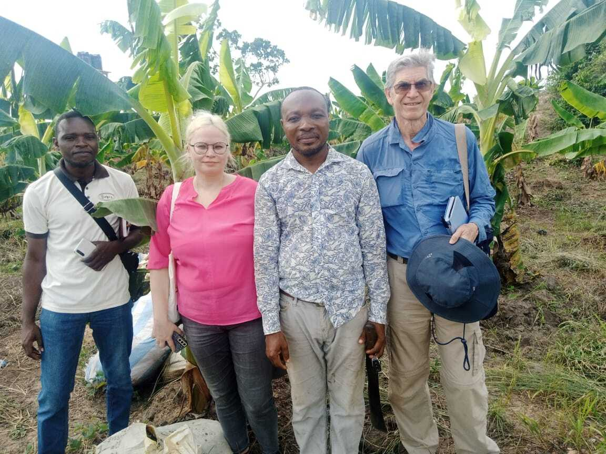
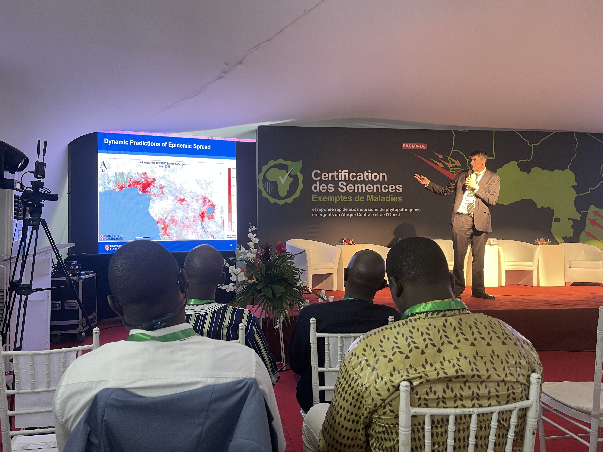
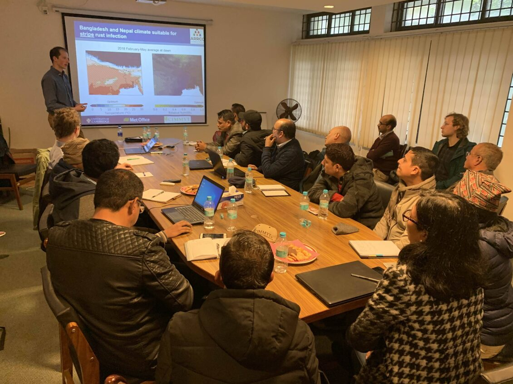
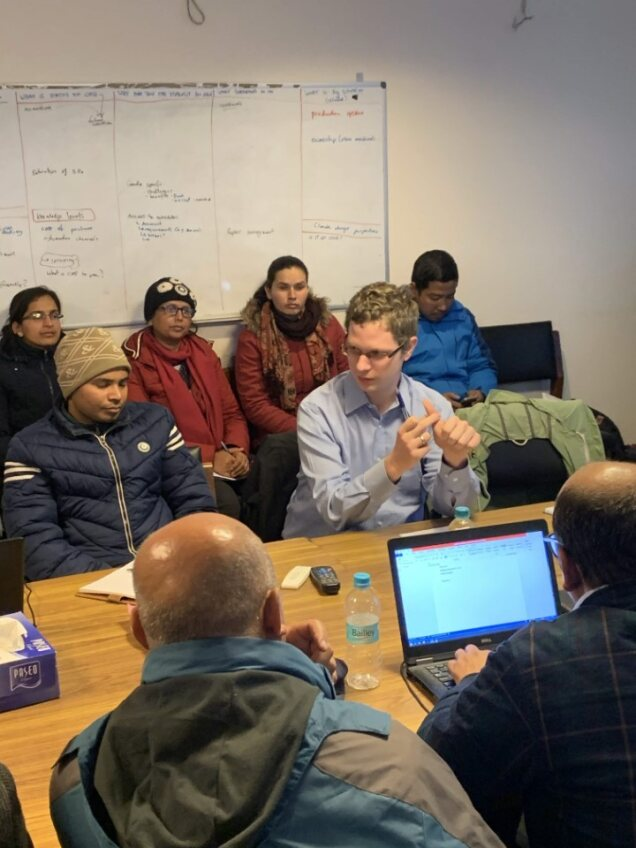
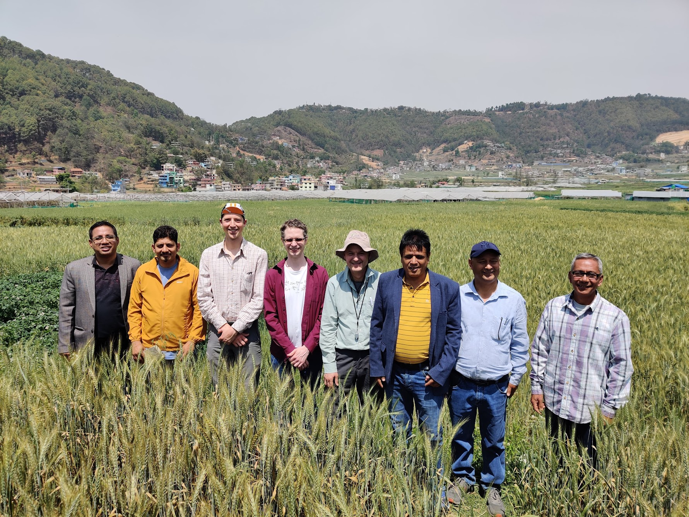
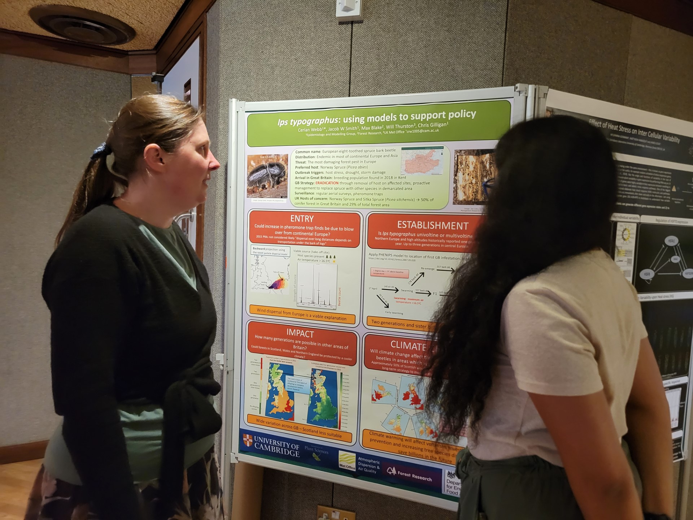
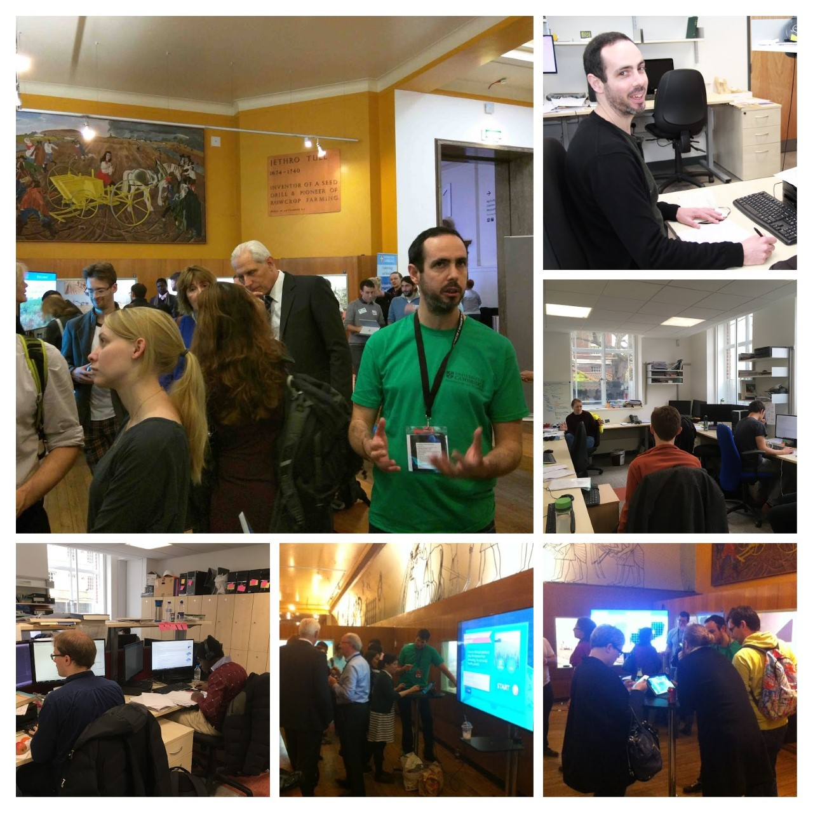

Model Applications for Impact
Two major challenges over the coming decades are food security and biodiversity loss; Both are intrinsically linked to the health of wild and cultivated plants and each is exacerbated by the frequency and nature of extreme weather patterns, emergence of new pandemics and regional instability.
Our models have been used to inform policy on emerging pest and pathogen threats by the UK Government, United States Department of Agriculture and Australia.

Leaves showing symptoms of cassava mosaic virus; Pathogen identification training sessions for farmers in East Africa coordinated by partners from the Cassava Diagnostics Project (CDP)
We work with partners to find effect ways to summarise and deliver our model outputs to government agencies and extension workers who in turn, inform famers and landowners of pest and disease risk through an established network of communication channels in-country. Through working in this way, we can deliver a real-time advisory service directly to subsistence farmers in sub-Saharan Africa and Southern Asia.

Figure source: Allen-Sader et al. (2019) Environment Research Letters
Outreach

Renata Retkute: Field visits with project partners, commercial banana plantation in Benin 2024.

Richard Stutt: Presentation to members of the WAVE consortium and international government officials, WAVE headquarters, Cote d’Ivoire, 2024

Jacob Smith: Training surveillance pathologists, CIMMYT, Nepal, 2024

Tamas Mona: Training surveillance pathologists, CIMMYT, Nepal, 2024

Jacob Smith & Tamas Mona: Field visit with project partners, CIMMYT, Nepal 2024

Cerian Webb: Festival of Plants, University of Cambridge, 2023

Ruairi Donnelly & Group members: Research Day, University of Cambridge 2022
Training presentations
How can farmers use models to prevent wheat disease?
The video was produced by Epidemiology and Modelling group members Richard Stutt, Alison Scott-Brown, Jacob W Smith, Tomi Mona with University of Cambridge Public Engagement funding. With grateful thanks to all our DEWAS collaborators including CIMMYT, Bangladesh Wheat and Maize Research Institute (BWMRI), Department of Agriculture Extension Khyber Pukhtunkhwa, Nepal Agriculture Research Council, Pakistan Agricultural Research Council (PARC), Ethiopian Institute of Agricultural Research, Ethiopian Agricultural Transformation Institute (ATI), Kenya Agricultural and Livestock Research Organization (KALRO), Agricultural Research Council, Aarhus University & John Innes Centre
Cambridge scientists use cutting-edge models to predict wheat disease outbreaks, empowering small-holder farmers across Africa and South Asia with actionable forecasts to protect their crops. This early warning system, developed with global partners, already supports hundreds of thousands of farmers and is scaling to reach millions, combining world-class science with local training to build resilience and transform lives worldwide.
Borlaug Global Rust Initiative (BGRI) workshop, Cornell University, 6-8th October 2021.
Title - Models for Emerging Epidemics: How can modelling help prevent rust epidemics? Professor Chris Gilligan, Epidemiology & Modelling Group:
Borlaug Global Rust Initiative (BGRI) workshop, Cornell University, 6-8th October 2021.
Title - Comparing simple and complex approaches of environmental suitability model methods for wheat rust. Dr Tamas Mona, Epidemiology & Modelling Group:
Projects:
Asia Regional Resilience to a Changing Climate (ARRCC)
Wheat Disease Early Warning Advisory System (Wheat DEWAS)
Funders:
This work is funded by The Bill and Melinda Gates Foundation and UK Foreign, Commonwealth & Development Office